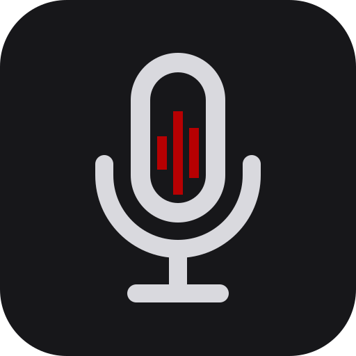
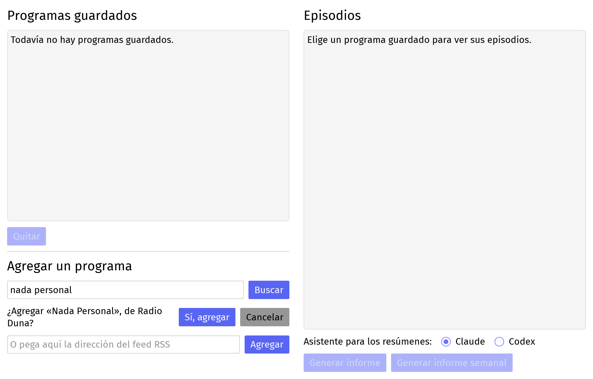
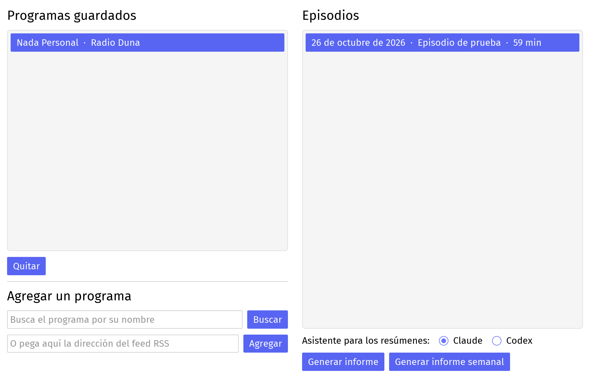
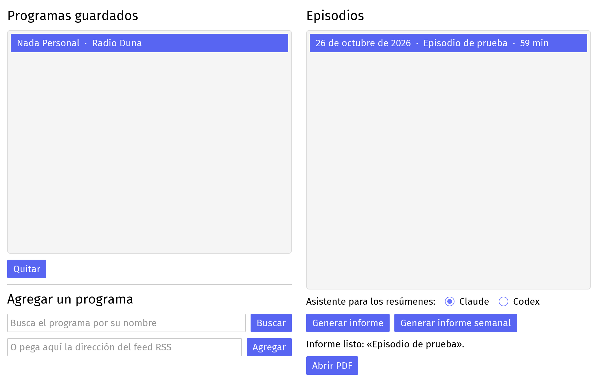

Podcast-Monitor
Convierte episodios de podcasts chilenos en un informe PDF para leer en vez de escuchar: el resumen, los temas por tiempo al aire, las personas mencionadas y citas textuales con su minuto.
Descargar
Antes de descargar: necesitas una cuenta de pago de Claude o de ChatGPT.
Podcast-Monitor transcribe en tu computador, pero los resúmenes los escribe uno de esos asistentes con tu cuenta. El programa instala lo que falta y te pide iniciar sesión. Si ya usas la app de escritorio de Claude o de ChatGPT, sirve la misma cuenta.
Instalar en Windows
- Abre la carpeta Descargas y haz doble clic en PodcastMonitor-windows-setup.
- Puede aparecer una ventana azul que dice Windows protegió su PC. Windows la muestra con los programas nuevos que todavía no conoce. Haz clic en Más información y después en Ejecutar de todas formas.
- Windows pregunta si permites que el programa haga cambios en el equipo. Presiona Sí.
- En el instalador presiona Siguiente y después Instalar.
- Deja marcada la casilla Abrir Podcast-Monitor y presiona Finalizar.
Las próximas veces lo abres desde el menú Inicio. Para desinstalarlo, busca Desinstalar Podcast-Monitor en el mismo menú.
La primera vez que lo abres
Arriba a la derecha de la ventana hay dos cosas por hacer, una sola vez:
- Presiona Descargar modelo. Es el modelo de voz, pesa 1,6 GB y se queda en tu computador. Si se corta internet, vuelve a presionar el botón y sigue donde quedó.
- Presiona Instalar y conectar. El programa instala el asistente elegido y abre el navegador para que inicies sesión con tu cuenta. Si ya lo tienes instalado, no lo vuelve a instalar y el botón dice Iniciar sesión; si ya iniciaste sesión, este paso no aparece.
Mientras falte alguno de los dos, los botones para generar informes quedan apagados.
Cómo hacer un informe



Cuánto se demora
La transcripción es la parte lenta y depende de tu computador. Con un episodio de 78 minutos:
- Con tarjeta de video dedicada (medido con una RTX 2050): menos de 3 minutos.
- Solo con el procesador (medido): cerca de 72 minutos, más o menos lo que dura el episodio.
- Con gráficos integrados recientes, como Radeon 680M o Intel Arc (estimación, todavía sin medir): entre 18 y 24 minutos. Los gráficos integrados más antiguos deberían quedar entre esa cifra y la del procesador.
Si tienes gráficos integrados y quieres ayudar, cuéntanos cuánto te demoró.